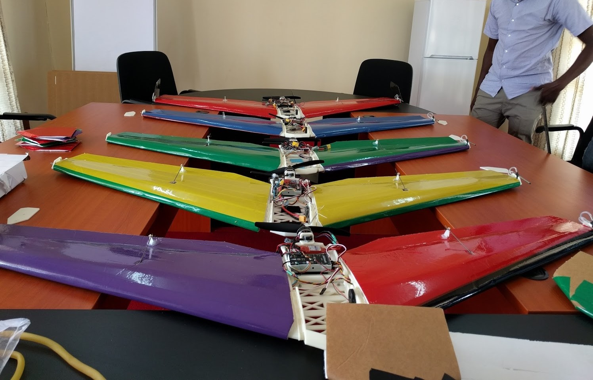

Youth & Technology.
Almost everything nowadays is driven by Technology thus introducing technology to children has great advantages for the betterness of our tomorrow

Technology Schools
Do you want to take a course in Technology field but you dont have a wide variety of colleges and Universities to choose from,Checkout below a list of all Technology courses being offered within Malawi.
Women in Science
Meet Rachael siwande,she is the founder and Director of Malawi's first innovation hub and incubator for emerging start-ups,entereprenurs and innovators,mhub.
Innovation and implementation
Drones for Health
Meet Dumisani Kaliati.He is the founder of Micromek,a Malawian based startup locally producing lowcost Unmanned arial vehicles that will serve the healthcare and environmental monitoring communities in Malawi and across africa.Micromek works hand in hand with the Virginia Tech University Unmanned systems Lab in developing low cost unmanned arial vehicles(Ecosoar) to explore in delivery of remote medicine to provide a sterile transportation chain from clinic to labolatory,reduce time for delivery of diagnostics,vaccines and medicines,provide lower cost delivery option and improve delivery reliability to help hospitals and relief organisations to tackle healthcare challenges affecting children in hard to reach,remote areas of Malawi
Smart Farming

There are alot of innovative ideas being implemented in different uiversities in Malawi as far as technology is concerned,of these brainstorming ideas.Some are happening at the Polytechnic University of Malawi.Chiku Walani is a student at the university of malawi and he designed a system he calls Smart farming system.The prototype takes sample parameters such moisture content and soil Ph which are then sent direct to a web portal .The system is in its development stages,He feels that the main problem is rhat certain information is not available to farmers and that there is heavy reliance of manual systems.With Smart farming system farmers will help farmers make right decisions thereby maxmising Agriculture industry.
mHub is Malawi’s first technology and innovation hub located in Lilongwe and a working space in Blantyre. The hub is a social enterprise that champions the development of local technology solutions. The hub nurtures young innovators and entrepreneurs with technical and business skills to create sustainable business solutions.
The hub facilitates structured mentorship between young entrepreneurs and innovators with established experts, researchers and icons in technology and business. mHub also aims to enhance knowledge sharing between industry, academia, developers, researchers and the community to ensure development of relevant technology solutions.
mHub also provides a co-working space for young innovators and entrepreneurs. The space is designed to unearth creativity, stimulate innovative thinking. The hub provides an environment for upcoming start-ups to work and connect with potential clients. It affords an atmosphere conducive for interaction with other like-minded innovators and entrepreneurs, sharing ideas and networking.